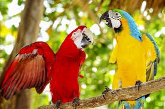
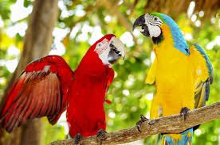
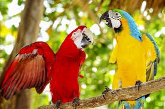

Stay in touch with us and get updates.
Here at DonateForPets
We have 10,000 Square Foot Facility thats run by the whole NYCDA. We are animal shelter that takes in donations for various animals. The donations that we collect at the animal shelter goes to bringing in new and taking care of existing animals that we have in the facility. Are Founders are Tyler and Carlos, they wanted to turn the faces of unhappy pets to smiling beings. They take pride in their DonateForPets facility, which doesn't really exist by the way but was founded at the NYCDA, New York City. Which you need a code to make the facility happen.
We take donations in many forms. Donate by Credit Card, Check by Mail, Money Orders such as Western Union. Even donate by mailing us some Pet Essentials.
(UPDATE: Are donating page is down. Feel free to head over to our GoFundme and donate there. By clicking on the button that says Donate now. Thanks.)

Our Vision:
A future in which all companion animals find responsible, loving homes where they are free from abuse, hunger, fear, and loneliness and receive the care and respect they deserve.
Our Mission:
Raise enough money to give these animals a good loving home.What We Value:
Overview
A national and international leader in the no-kill movement, North Shore Animal League America is committed to saving and rehabilitating the lives of homeless companion animals and educating the public about the joys and responsibilities of rescue. Founded in 1944, we’re the largest, most comprehensive no-kill rescue and adoption organization in the world, with more than 2,000 shelter partners across the country and around the globe. Headquartered in Port Washington, N.Y., we rescue, nurture, and adopt nearly 18,000 pets annually into responsible, loving homes, plus assist in the adoptions of thousands more through our global partnerships. Over the years, we’ve introduced such lifesaving best practices as mobile adoption, offsite adoption, puppy mill rescue, national low-cost spay/neuter referral, humane relocation, and most recently, the Mutt-i-grees® Curriculum, a transformative humane education program based on social-emotional learning and the natural affinity between children and animals. Introduced in 2010, the Mutt-i-grees Curriculum is strengthening the human-animal bond for more than 3,000,000 students across North America, and creating future generations of informed and empathetic adopters..